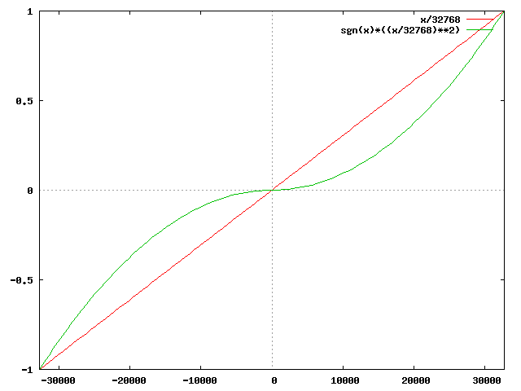

Having the use of a joystick enhances the sensation of presence in a game. Under linux, the available joystick API is based around periodic reading of events from a device driver file (usually /dev/jsX or /dev/input/jsX).
Gamelib now offers an interface to handle joysticks on the linux platform (code for joystick handling on other platforms is welcome). The joystick is somewhat abstracted from the raw data that the device driver offers.
The interface is centred around a JOYSTICK object (created by calling MAKE-STICK with a suitable device name as argument). To read an event from the device driver, call UPDATE-STICK with the joystick object as argument.
Under SBCL (with thread support) there is a "continous poll" support (simply call CONTINOUS-POLL with the joystick object as argument, to terminate the polling thread, call TERMINATE-POLL with the object as argument). All relevant locking is done, keyed on if a joystick is polled or not. Still, the publicly available information will only be done after a call to UPDATE-STICK.
There are two arrays that are of interest in a joystick object js. The first is the analog axes, (axes js) and the second is the buttons (buttons js). The library currently supports up to 8 analog axes and up to 24 buttons (and will most likely crash in amusing ways, should these limits be too strict).
As part of the update and transformation from signed 16-bit integers to SINGLE-FLOAT, some transformations of the data can be done. The (currently) available library functions are SIMPLE-TRANSFER (the default), a simple division by 32768.0s0 and SQUARE-TRANSFER (the result of a SIMPLE-TRANSFER, squared and multiplied by the signum).
A graph displaying these two transfer functions (X axis is raw
joystick data, Y axis is the displacement along the axis available
from GAMES-STICK):

A quick example using the stick library can be found here.